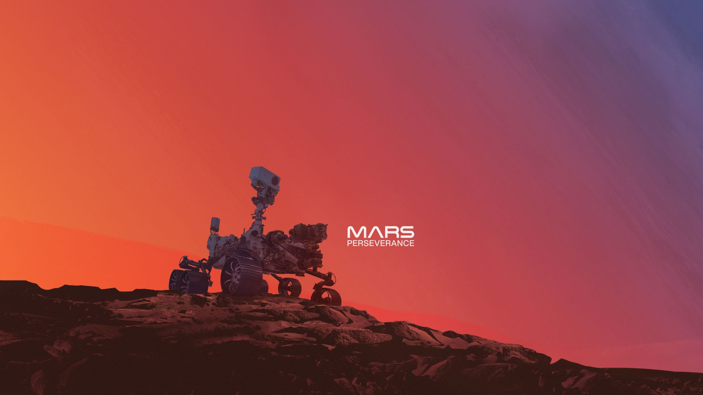
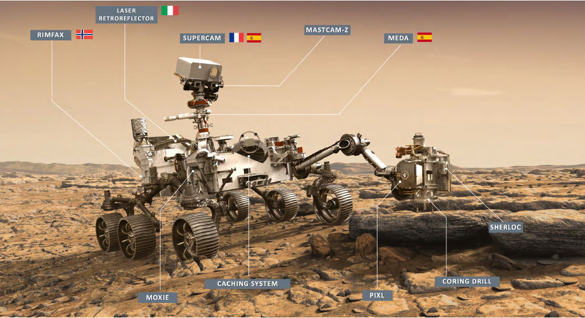
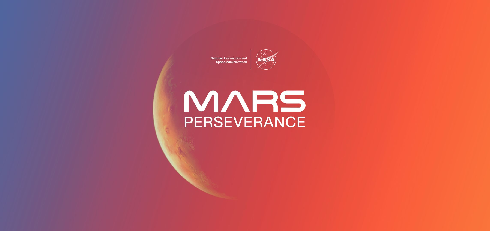

O misji
Nazwa misji: Mars 2020Nazwa łazika: Perseverance
Czas wystrzelenia: 30 lipca 2020, 11:50 UTC
Miejsce wystrzelenia: CCSFS
Czas lądowania: 18 lutego 2021, 20:55 UTC
Miejsce lądowania: Krater Jezero
(18° 26′ 41″ N, 77° 27′ 3″ E)
Główny cel: poszukiwania życia
Koszt: 2,75 miliarda USD
Inna nazwa: Percy
Dane techniczne łazika
Długość: 3 mSzerokość: 2,7 m
Wysokość: 2,2 m
Moc: 110 W (0,15 KM)
Masa: 1 025 kg



Cel misji
Głównym zadaniem łazika jest zbadanie dna krateru i ustalenie, czy mogło tam występować życie. W tym celu Perseverance będzie badał skały, które zachowują w sobie ślady przeszłości. Przy okazji Perseverance będzie obserwował marsjański klimat. Ma za zadanie sprawdzić, jak zmienia się on na przestrzeni roku. Do tego łazik zajrzy w głąb Marsa, by scharakteryzować strukturę najbliższych powierzchni skał. Oprócz tego łazik ma sprawdzić, jak działa system produkcji zdatnego do oddychania powietrza z marsjańskiej atmosfery.Nazwa
Na nazwę łazika został ogłoszony konkurs wśród uczniów szkół podstawowych i średnich z całego świata. Do JPL wpłynęło ponad 28 tysięcy propozycji. Zwycięzca, Alexander Mather, został wraz z rodziną zaproszony do Kennedy Space Center na wystrzelenie łazika.Perseverance oznacza wytrwałość, co ma symbolizować zapał ludzkości do eksploracji czerwonej planety


Rozmieszczenie poszczególnych instrumentów na pokładzie łazika
Instrumenty
Perseverance wyposażony jest w wiele przyrządów umożliwiającyh mu wykonanie zadań. Podstawowymi z nich są kamery, które aż w liczbie 23 znalazły się na pokładzie, by przesyłać na Ziemię zdjęcia czerwonej planety w zapierającej dech w piersiach jakości. Nie zabrakło także sensorów, skanerów i innych zaawansowanych urządzeń służących do badania napotkanego środowiska.Linki
- Strona główna misji
- Zestaw prasowy - wszystkie informacje o misji
- Biblioteka zdjęć wykonanych przez Perseverance
- Aktualna pozycja łazika na Marsie
- Wikipedia Perseverance
- Twitter NASA Follow @NASA
- Twitter Perseverance Follow @NASAPersevere
Źródła
- Zdjęcia: NASA
- Informacje: NASA
- Tło: Amante Lombardi
